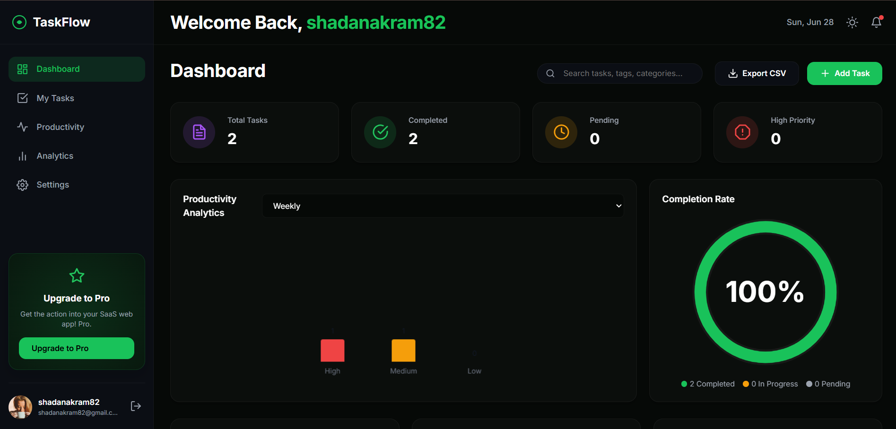

Loved By Teams
See what our community has to say about TaskFlow.


Organize your projects, track your progress, and
achieve your daily goals in one seamless platform.

See how our platform turns chaos into clarity, step by step.
Gain complete insight into what's happening at each stage. Monitor your tasks in real-time, identify bottlenecks instantly, and ensure your team stays focused on high-impact work.
Say goodbye to manual data entry. Our smart triggers automatically assign tasks, send emails, and update statuses based on natural language rules.
Sync perfectly with Slack, Google Calendar, Notion, and more. Keep your entire toolchain connected without writing a single line of code.
Visualize your workflow efficiency with beautiful, real-time charts. Instantly see where your time goes and optimize your processes for maximum output.
See what our community has to say about TaskFlow.
Our impact at a glance.
Uptime SLA
Tasks Automated
Saved per week
Active Teams
Everything you need to know about TaskFlow.
TaskFlow uses natural language processing to understand your goals and builds the automation logic instantly behind the scenes.
Yes! TaskFlow offers 1-click integrations with over 50 popular tools including Slack, Google Workspace, and Notion.
Yes, we offer a fully-featured 14-day free trial on all our plans. No credit card is required to sign up.